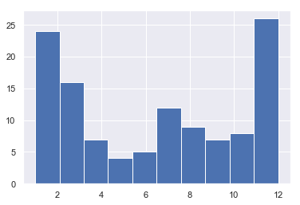

Space Explorations
Contents
7. Space Explorations#
import pandas as pd
import datetime
import numpy as np
import matplotlib.pyplot as plt
import seaborn as sns
sns.set(style="darkgrid")
%%bash
ls data
air-transport-passengers-by-year.csv
air-transport-passengers-carried.csv
air-transportation-and-death-by-year.csv
space-exploration-launches-by-year.csv
space-exploration-world-and-china-launches-by-year.csv
space-exploration.csv
df_raw = pd.read_csv('data/space-exploration.csv')
df = df_raw.copy()
df.dtypes
Date object
Event leading to space exploration object
Country object
Researcher(s) object
dtype: object
df.iloc[21]
Date 6/20/1944
Event leading to space exploration V-2 Rocket (MW 18014): First man-made object t...
Country Germany
Researcher(s) Wehrmacht
Name: 21, dtype: object
datetime.datetime.strptime('6/20/1944', '%m/%d/%Y')
datetime.datetime(1944, 6, 20, 0, 0)
def transform_date(inp):
if '/' in str(inp):
try:
dt = datetime.datetime.strptime(inp, '%m/%d/%Y')
except:
dt = None
pass
else:
dt = None
return dt
df['dt_dates'] = df['Date'].apply( transform_date )
df['year'] = df['dt_dates'].apply( lambda x: x.year )
df['month'] = df['dt_dates'].apply( lambda x: x.month )
df['day'] = df['dt_dates'].apply( lambda x: x.day )
df_with_dates = df[~df.dt_dates.isna()]
df_with_dates['year'] = df_with_dates.year.astype(int)
df_with_dates['month'] = df_with_dates.month.astype(int)
df_with_dates['day'] = df_with_dates.day.astype(int)
/Users/leima/anaconda3/lib/python3.6/site-packages/ipykernel_launcher.py:1: SettingWithCopyWarning:
A value is trying to be set on a copy of a slice from a DataFrame.
Try using .loc[row_indexer,col_indexer] = value instead
See the caveats in the documentation: http://pandas.pydata.org/pandas-docs/stable/indexing.html#indexing-view-versus-copy
"""Entry point for launching an IPython kernel.
/Users/leima/anaconda3/lib/python3.6/site-packages/ipykernel_launcher.py:2: SettingWithCopyWarning:
A value is trying to be set on a copy of a slice from a DataFrame.
Try using .loc[row_indexer,col_indexer] = value instead
See the caveats in the documentation: http://pandas.pydata.org/pandas-docs/stable/indexing.html#indexing-view-versus-copy
/Users/leima/anaconda3/lib/python3.6/site-packages/ipykernel_launcher.py:3: SettingWithCopyWarning:
A value is trying to be set on a copy of a slice from a DataFrame.
Try using .loc[row_indexer,col_indexer] = value instead
See the caveats in the documentation: http://pandas.pydata.org/pandas-docs/stable/indexing.html#indexing-view-versus-copy
This is separate from the ipykernel package so we can avoid doing imports until
plt.figure( figsize=(10,6.18) )
import numpy as np
import pylab as plt
data = df_with_dates.month.values
y,binEdges = np.histogram(data,bins=10)
bincenters = 0.5*(binEdges[1:]+binEdges[:-1])
menStd = np.sqrt(y)
width = 1
plt.bar(bincenters, y, width=width, yerr=menStd)
plt.xlabel('Months')
plt.ylabel('Counts')
plt.show()
df_with_dates.month.hist()
plt.show()

df_with_dates.day.hist()
plt.show()
7.1. Produce Pretty Graph#
df_with_dates.groupby('month').count()[ 'dt_dates']
month
1 12
2 12
3 16
4 7
5 4
6 5
7 12
8 9
9 7
10 8
11 13
12 13
Name: dt_dates, dtype: int64
month_hist, month_edge = np.histogram(df_with_dates.month.values, bins = np.arange(1,14))
day_hist, day_edge = np.histogram(df_with_dates.day.values, bins = np.arange(1,33))
month_edge
array([ 1, 2, 3, 4, 5, 6, 7, 8, 9, 10, 11, 12, 13])
month_hist
array([12, 12, 16, 7, 4, 5, 12, 9, 7, 8, 13, 13])
fig, ax = plt.subplots( figsize=(10, 6.18) )
month_x = month_edge[:-1] -0.5
ax.bar( month_x, month_hist, 1, color=(0.2980392156862745, 0.4470588235294118, 0.6901960784313725) )
ax.set_xticks( np.arange(1,13) -0.5 )
ax.set_xticklabels( [ str(i) for i in np.arange(1,13) ] )
ax.set_xlabel('Month')
ax.set_ylabel('Count')
fig.savefig('export/month-distribution.png')
fig, ax = plt.subplots( figsize=(10, 6.18) )
day_x = day_edge[:-1] -0.5
ax.bar( day_x, day_hist, 1, color=(0.2980392156862745, 0.4470588235294118, 0.6901960784313725) )
ax.set_xticks( np.arange(1,32) -0.5 )
ax.set_xticklabels( [ str(i) for i in np.arange(1,32) ] )
ax.set_xlabel('Month')
ax.set_ylabel('Count')
fig.savefig('export/day-distribution.png')
== Orbital launches by year ==
def comma_strings_to_int(inp):
ret = inp.split(':')
ret = [ int(i) for i in ret ]
return ret
comma_strings_to_int('70: 78: 72: 77: 88: 82: 82: 83: 90: 0')
[70, 78, 72, 77, 88, 82, 82, 83, 90, 0]
launch_years = np.arange(1957, 2021,1) #[ 1957,1958,1959, 1960, ... ]
failures = [ [1, 20, 11], [19, 20, 15, 17, 15, 15, 13, 12, 10, 15] , [10, 14, 7, 8, 7, 7, 3, 6, 4, 5], [4, 3, 8, 2, 0, 5, 7, 4, 5, 1], [5, 3, 3, 4, 4, 5, 4, 3, 5, 6], [4, 1, 5, 3, 1, 3, 5, 3, 2, 4], [4, 6, 4, 3, 2, 4, 2, 5, 2, 0], [0] ]
partial_failures = [ [1, 2, 2], [0, 2, 1, 3, 3, 1, 7, 7, 3, 4], [2, 1, 1, 0, 1, 1, 3, 3, 2, 1], [3, 6, 2, 0, 3, 2, 1, 2, 2, 0], [2, 2, 1, 2, 1, 3, 4, 3, 2, 0], [0, 0, 0, 0, 3, 0, 0, 2, 1, 1], [0, 0, 2, 1, 2, 1, 1, 2, 1, 0], [0] ]
success = [ [1, 6, 10], [19, 28, 65, 50, 82, 108, 111, 120, 116, 106], [112, 119, 105, 109, 105, 124, 125, 121, 122, 105], [102, 117, 119, 127, 126, 118, 102, 108, 114, 101], [114, 86, 94, 77, 88, 72, 69, 83, 75, 73], [81, 58, 60, 60, 50, 52, 62, 63, 66, 73], [70, 78, 72, 77, 88, 82, 82, 83, 91, 0], [0] ]
planned = [[0, 0, 0], [0, 0, 0, 0, 0, 0, 0, 0, 0, 0], [0, 0, 0, 0, 0, 0, 0, 0, 0, 0], [0, 0, 0, 0, 0, 0, 0, 0, 0, 0], [0, 0, 0, 0, 0, 0, 0, 0, 0, 0], [0, 0, 0, 0, 0, 0, 0, 0, 0, 0], [0, 0, 0, 0, 0, 0, 0, 0, 39, 165], [103] ]
df_launches = pd.DataFrame( {
'launch year': launch_years,
'failure': [item for sublist in failures for item in sublist],
'partial failure': [item for sublist in partial_failures for item in sublist],
'success': [item for sublist in success for item in sublist],
'planned': [item for sublist in planned for item in sublist] } )
df_launches.set_index('launch year', inplace=True);
df_launches['success rate'] = df_launches.apply( lambda x: x['success'] / (x['failure'] + x['partial failure'] + x['success']) , axis=1)
/Users/leima/anaconda3/lib/python3.6/site-packages/ipykernel_launcher.py:1: RuntimeWarning: invalid value encountered in long_scalars
"""Entry point for launching an IPython kernel.
df_launches['mean success rate after 2000'] = df_launches[ ['success rate' ] ].loc[2000:].describe().loc['mean'].values[0]
df_launches['std success rate after 2000'] = df_launches[ ['success rate' ] ].loc[2000:].describe().loc['std'].values[0]
df_launches.head()
| failure | partial failure | success | planned | success rate | mean success rate after 2000 | std success rate after 2000 | |
|---|---|---|---|---|---|---|---|
| launch year | |||||||
| 1957 | 1 | 1 | 1 | 0 | 0.333333 | 0.943651 | 0.017766 |
| 1958 | 20 | 2 | 6 | 0 | 0.214286 | 0.943651 | 0.017766 |
| 1959 | 11 | 2 | 10 | 0 | 0.434783 | 0.943651 | 0.017766 |
| 1960 | 19 | 0 | 19 | 0 | 0.500000 | 0.943651 | 0.017766 |
| 1961 | 20 | 2 | 28 | 0 | 0.560000 | 0.943651 | 0.017766 |
df_launches.to_csv('data/space-exploration-launches-by-year.csv')
current_palette = sns.color_palette()
print(current_palette)
sns.palplot(current_palette)
[(0.2980392156862745, 0.4470588235294118, 0.6901960784313725), (0.8666666666666667, 0.5176470588235295, 0.3215686274509804), (0.3333333333333333, 0.6588235294117647, 0.40784313725490196), (0.7686274509803922, 0.3058823529411765, 0.3215686274509804), (0.5058823529411764, 0.4470588235294118, 0.7019607843137254), (0.5764705882352941, 0.47058823529411764, 0.3764705882352941), (0.8549019607843137, 0.5450980392156862, 0.7647058823529411), (0.5490196078431373, 0.5490196078431373, 0.5490196078431373), (0.8, 0.7254901960784313, 0.4549019607843137), (0.39215686274509803, 0.7098039215686275, 0.803921568627451)]
fig, ax = plt.subplots( figsize=(20,6.18) )
df_launches[ ['failure', 'partial failure', 'success', 'planned' ] ].plot.bar(stacked=True, ax=ax, color= ['r',(0.8666666666666667, 0.5176470588235295, 0.3215686274509804), (0.3333333333333333, 0.6588235294117647, 0.40784313725490196), (0.5490196078431373, 0.5490196078431373, 0.5490196078431373)] )
ax.set_xticklabels( launch_years );
ax.set_ylabel('Number of Launches')
fig.savefig('export/space-launch-yearly.png')

fig, ax = plt.subplots( figsize=(20,6.18) )
df_launches[ ['success rate', 'mean success rate after 2000' ] ].plot(ax=ax, color= 'g', style=['-', '--'] )
ax.set_xticks( launch_years[::3] )
ax.set_xticklabels( launch_years[::3] );
ax.set_ylabel('Success Rate of Launches')
fig.savefig('export/space-launch-success-rate-yearly.png')
7.2. Chinese Rocket Launches#
== Launch statistics ==
<!-- The summary and bar chart are constantly getting out of sync. Make sure to update both of them at the same time. -->
Rockets from the Long March family have accumulated 290 launches {{as of|2018|11|01|lc=on}}. Of these, 275 were successful, 8 were failures, and 7 were partial failures. The cumulative success rate is {{percent|275|290|1}}.
<!-- Bars are grouped in decades, with extra spaces between the groups. -->
{{ #invoke:Chart | bar-chart
| height = 400
| width = 900
| stack = 1
| group 1 = 0: 0: 0: 0: 1: 0: 0: 0: 0: 0: 0: 0: 0: 0: 0: 0: 0: 0: 0: 0: 0: 0: 1: 0: 0: 1: 1: 0: 0: 0: 0: 0: 0: 0: 0: 0: 0: 0: 0: 0: 0: 1: 0: 1: 0: 0: 1: 1: 0: 0: 0
| group 2 = 0: 0: 0: 0: 0: 0: 0: 0: 0: 0: 0: 0: 0: 0: 1: 0: 0: 0: 0: 0: 0: 1: 0: 0: 0: 0: 1: 0: 0: 0: 0: 0: 0: 0: 0: 0: 0: 0: 0: 1: 0: 0: 0: 0: 0: 0: 1: 1: 0: 0: 0
| group 3 = 1: 1: 0: 0: 0: 1: 1: 0: 1: 0: 0: 0: 1: 1: 2: 1: 2: 2: 4: 0: 5: 0: 3: 1: 5: 1: 2: 6: 6: 4: 5: 1: 4: 6: 8: 5: 6: 10: 11: 5: 15: 18: 19: 13: 15: 19: 20: 15: 30: 0: 0
| group 4 = 0: 0: 0: 0: 0: 0: 0: 0: 0: 0: 0: 0: 0: 0: 0: 0: 0: 0: 0: 0: 0: 0: 0: 0: 0: 0: 0: 0: 0: 0: 0: 0: 0: 0: 0: 0: 0: 0: 0: 0: 0: 0: 0: 0: 0: 0: 0: 0: 8: 14: 14
| colors = FireBrick : Orange : ForestGreen : LightBlue
| group names = Failure : Partial failure : Success : Planned<ref name=pietrobon>{{cite web |title=Chinese Launch Manifest |url=http://www.sworld.com.au/steven/space/china-man.txt |first=Steven |last=Pietrobon |date=4 June 2018 |access-date=5 June 2018}}</ref>
| units suffix = _launches
| x legends = 1970 ::::: 1975 ::::: 1980 ::::: 1985 ::::: 1990 ::::: 1995 ::::: 2000 ::::: 2005 ::::: 2010 ::::: 2015 ::::: 2020
}}
=== Anomalies and failures ===
A '''success''' is a launch that deploys all payloads into the correct orbit without damage. The launch vehicle may experience an anomaly that does not affect the mission. The payload may experience an anomaly that was not caused by the launch.
* On 29 November 1994, the [[Long March 3A]] successfully deployed Chinasat-5 into geosynchronous transfer orbit. However, the satellite failed to reach geostationary orbit due to a propellant leak.
* On 3 November 2016, the Long March 5 experienced an anomaly in the second stage, failing to deploy the stack into the correct geosynchronous transfer orbit. However, the third stage was able to compensate for the performance shortfall with a longer burn.
A '''partial failure''' is a launch that reaches orbit, but at least one payload was not deployed into the correct orbit without damage.<ref>{{cite news|last1=Nowakowski|first1=Tomasz|title=Russian Soyuz-2.1v Launch a Partial Failure|url=http://www.spaceflightinsider.com/missions/defense/russia-successfully-launches-kanopus-st-satellite-into-orbit/|work=Spaceflight Insider|date=December 7, 2015|quote=The mission was declared successful shortly after the launch, but the latest media reports indicate that one of the satellites did not separate from the rockets upper stage and is most likely lost.}}</ref> After a partial failure, a satellite may operate at reduced functionality or with a reduced lifetime. A common type of partial failure occurs when a satellite is deployed into a lower than intended orbit. The satellite can maneuver with its own propulsion system to reach the correct orbit, but this reduces the fuel available for station-keeping and shortens its operational life.<ref>{{cite news|last1=Jones|first1=Andrew|title=China confirms partial failure of Zhongxing-9A launch, measures being taken|url=https://gbtimes.com/china-confirms-partial-failure-zhongxing-9a-launch-measures-being-taken|work=GBTIMES|date=June 19, 2017}}</ref>
* On 29 January 1984, the maiden launch of the [[Long March 3]] failed to reach geosynchronous transfer orbit.
* On 28 December 1991, the [[Long March 3]] failed to deploy the payload into geosynchronous transfer orbit.
* On 28 November 1995, the [[Long March 2E]] damaged [[AsiaSat 2]] by subjecting it to excessive forces during the launch. The satellite was unable to broadcast to its full coverage area.
* On 18 August 1996, the [[Long March 3]] failed to deploy the payload into geosynchronous transfer orbit.
* On 31 August 2009, the [[Long March 3B]] failed to deploy the payload into geosynchronous transfer orbit. The satellite reached the intended orbit with its own propulsion system.
* On 28 December 2016, the [[Long March 2D]] failed to deploy the payloads into sun synchronous orbit. The primary payloads reached the correct orbit with their own propulsion systems, but the secondary payload had no propulsion system and reentered two months later.
* On 18 June 2017, the [[Long March 3B]] failed to deploy [[ChinaSat 9A]] into geosynchronous transfer orbit. The satellite maneuvered 10 times over a one-month period to reach the correct orbit.
A '''failure''' is a launch that destroys the satellite or does not deploy it into earth orbit.
* On 5 November 1974, the [[Long March 2]] lost control during its maiden launch.
* On 21 December 1992, the [[Long March 2E]] experienced a structural failure of the payload fairing, destroying the [[Optus (satellite)#Optus B2|Optus B2]] communications satellite.
* On 25 January 1995, the [[Long March 2E]] experienced another structural failure in the payload fairing, destroying the [[Apstar 2]] communications satellite.
* On 14 February 1996, the [[Long March 3B]] lost its guidance platform and veered off course, hitting a nearby village and killing at least 6 people.
* On 18 August 2011, the [[Long March 2C]] lost attitude control.
* On 9 December 2013, the [[Long March 4B]] experienced an early shutdown of its third stage and failed to reach orbit.
* On 31 August 2016, the [[Long March 4C]] failed to reach orbit.
* On 2 July 2017, the [[Long March 5]] experienced an anomaly in its first stage and failed to reach orbit.
print( comma_strings_to_int('0: 0: 0: 0: 0: 0: 0: 0: 0: 0: 0: 0: 0: 0: 0: 0: 0: 0: 0: 0: 0: 0: 0: 0: 0: 0: 0: 0: 0: 0: 0: 0: 0: 0: 0: 0: 0: 0: 0: 0: 0: 0: 0: 0: 0: 0: 0: 0: 8: 14: 14') )
[0, 0, 0, 0, 0, 0, 0, 0, 0, 0, 0, 0, 0, 0, 0, 0, 0, 0, 0, 0, 0, 0, 0, 0, 0, 0, 0, 0, 0, 0, 0, 0, 0, 0, 0, 0, 0, 0, 0, 0, 0, 0, 0, 0, 0, 0, 0, 0, 8, 14, 14]
failure_china = [0, 0, 0, 0, 1, 0, 0, 0, 0, 0, 0, 0, 0, 0, 0, 0, 0, 0, 0, 0, 0, 0, 1, 0, 0, 1, 1, 0, 0, 0, 0, 0, 0, 0, 0, 0, 0, 0, 0, 0, 0, 1, 0, 1, 0, 0, 1, 1, 0, 0, 0]
partial_failure_china = [0, 0, 0, 0, 0, 0, 0, 0, 0, 0, 0, 0, 0, 0, 1, 0, 0, 0, 0, 0, 0, 1, 0, 0, 0, 0, 1, 0, 0, 0, 0, 0, 0, 0, 0, 0, 0, 0, 0, 1, 0, 0, 0, 0, 0, 0, 1, 1, 0, 0, 0]
success_china = [1, 1, 0, 0, 0, 1, 1, 0, 1, 0, 0, 0, 1, 1, 2, 1, 2, 2, 4, 0, 5, 0, 3, 1, 5, 1, 2, 6, 6, 4, 5, 1, 4, 6, 8, 5, 6, 10, 11, 5, 15, 18, 19, 13, 15, 19, 20, 15, 30, 0, 0]
planned_china = [0, 0, 0, 0, 0, 0, 0, 0, 0, 0, 0, 0, 0, 0, 0, 0, 0, 0, 0, 0, 0, 0, 0, 0, 0, 0, 0, 0, 0, 0, 0, 0, 0, 0, 0, 0, 0, 0, 0, 0, 0, 0, 0, 0, 0, 0, 0, 0, 8, 14, 14]
launch_year_china = np.arange(1970, 2021,1)
df_china = pd.DataFrame({'launch year': launch_year_china, 'failure': np.array(failure_china), 'partial failure': np.array(partial_failure_china), 'success': np.array(success_china), 'planned': np.array(planned_china)})
df_china.set_index('launch year', inplace=True);
df_china['success rate'] = df_china.apply( lambda x: x['success'] / (x['failure'] + x['partial failure'] + x['success']) , axis=1)
df_china['mean success rate after 2000'] = df_china[ ['success rate' ] ].loc[2000:].describe().loc['mean'].values[0]
df_china['std success rate after 2000'] = df_china[ ['success rate' ] ].loc[2000:].describe().loc['std'].values[0]
/Users/leima/anaconda3/lib/python3.6/site-packages/ipykernel_launcher.py:1: RuntimeWarning: invalid value encountered in long_scalars
"""Entry point for launching an IPython kernel.
df_china.head()
| failure | partial failure | success | planned | success rate | mean success rate after 2000 | std success rate after 2000 | |
|---|---|---|---|---|---|---|---|
| launch year | |||||||
| 1970 | 0 | 0 | 1 | 0 | 1.0 | 0.973722 | 0.049797 |
| 1971 | 0 | 0 | 1 | 0 | 1.0 | 0.973722 | 0.049797 |
| 1972 | 0 | 0 | 0 | 0 | NaN | 0.973722 | 0.049797 |
| 1973 | 0 | 0 | 0 | 0 | NaN | 0.973722 | 0.049797 |
| 1974 | 1 | 0 | 0 | 0 | 0.0 | 0.973722 | 0.049797 |
df_world_china = pd.merge( df_launches, df_china, on='launch year', how='left' )
df_world_china.columns = ['world failure', 'world partial failure', 'world success', 'world planned',
'world success rate', 'world mean success rate after 2000',
'world std success rate after 2000', 'china failure', 'china partial failure',
'china success', 'china planned', 'china success rate',
'china mean success rate after 2000', 'china std success rate after 2000']
df_world_china['china mean success rate after 2000'] = df_world_china.iloc[-1]['china mean success rate after 2000']
df_world_china['china std success rate after 2000'] = df_world_china.iloc[-1]['china std success rate after 2000']
df_world_china.head()
| world failure | world partial failure | world success | world planned | world success rate | world mean success rate after 2000 | world std success rate after 2000 | china failure | china partial failure | china success | china planned | china success rate | china mean success rate after 2000 | china std success rate after 2000 | |
|---|---|---|---|---|---|---|---|---|---|---|---|---|---|---|
| launch year | ||||||||||||||
| 1957 | 1 | 1 | 1 | 0 | 0.333333 | 0.943651 | 0.017766 | NaN | NaN | NaN | NaN | NaN | 0.973722 | 0.049797 |
| 1958 | 20 | 2 | 6 | 0 | 0.214286 | 0.943651 | 0.017766 | NaN | NaN | NaN | NaN | NaN | 0.973722 | 0.049797 |
| 1959 | 11 | 2 | 10 | 0 | 0.434783 | 0.943651 | 0.017766 | NaN | NaN | NaN | NaN | NaN | 0.973722 | 0.049797 |
| 1960 | 19 | 0 | 19 | 0 | 0.500000 | 0.943651 | 0.017766 | NaN | NaN | NaN | NaN | NaN | 0.973722 | 0.049797 |
| 1961 | 20 | 2 | 28 | 0 | 0.560000 | 0.943651 | 0.017766 | NaN | NaN | NaN | NaN | NaN | 0.973722 | 0.049797 |
df_world_china.to_csv('data/space-exploration-world-and-china-launches-by-year.csv')
fig, ax = plt.subplots( figsize=(20,6.18) )
df_world_china.loc[2000:][ ['world success rate', 'world mean success rate after 2000' ] ].plot(ax=ax, color= 'g', style=['-', '--'] )
df_world_china.loc[2000:][ ['china success rate', 'china mean success rate after 2000' ] ].plot(ax=ax, color= 'r', style=['-', '--'] )
ax.set_xticks( df_world_china.loc[2000:].index.values )
ax.set_xticklabels( df_world_china.loc[2000:].index.values );
ax.set_ylabel('Success Rate of Launches')
ax.set_ylim([0,1.1])
fig.savefig('export/space-launch-success-rate-china-world-yearly.png')
fig, ax = plt.subplots( figsize=(20,6.18) )
df_world_china[ ['world success rate', 'world mean success rate after 2000', 'china mean success rate after 2000' ] ].plot(ax=ax, color= ['g','g','r'], style=['-', '--', ':'] )
ax.set_xticks( launch_years[::3] )
ax.set_xticklabels( launch_years[::3] );
ax.set_ylabel('Success Rate of Launches')
fig.savefig('export/space-launch-success-rate-with-china-mean-yearly.png')
7.3. Air Transportation#
df_air = pd.read_csv('data/air-transport-passengers-carried.csv')
df_air_t = df_air.transpose()
df_air_summary = df_air.describe()
df_air_summary
| 1960 | 1961 | 1962 | 1963 | 1964 | 1965 | 1966 | 1967 | 1968 | 1969 | ... | 2009 | 2010 | 2011 | 2012 | 2013 | 2014 | 2015 | 2016 | 2017 | Unnamed: 62 | |
|---|---|---|---|---|---|---|---|---|---|---|---|---|---|---|---|---|---|---|---|---|---|
| count | 0.0 | 0.0 | 0.0 | 0.0 | 0.0 | 0.0 | 0.0 | 0.0 | 0.0 | 0.0 | ... | 1.820000e+02 | 2.050000e+02 | 2.050000e+02 | 2.050000e+02 | 2.040000e+02 | 2.040000e+02 | 2.000000e+02 | 2.010000e+02 | 1.990000e+02 | 0.0 |
| mean | NaN | NaN | NaN | NaN | NaN | NaN | NaN | NaN | NaN | NaN | ... | 9.756383e+07 | 1.034285e+08 | 1.109374e+08 | 1.164027e+08 | 1.238505e+08 | 1.317110e+08 | 1.451395e+08 | 1.549384e+08 | 1.689135e+08 | NaN |
| std | NaN | NaN | NaN | NaN | NaN | NaN | NaN | NaN | NaN | NaN | ... | 2.886695e+08 | 3.150289e+08 | 3.331397e+08 | 3.464099e+08 | 3.657630e+08 | 3.874896e+08 | 4.203152e+08 | 4.485057e+08 | 4.853347e+08 | NaN |
| min | NaN | NaN | NaN | NaN | NaN | NaN | NaN | NaN | NaN | NaN | ... | 2.178400e+04 | 0.000000e+00 | 0.000000e+00 | 0.000000e+00 | 0.000000e+00 | 0.000000e+00 | 3.036000e+03 | 8.990000e+02 | 3.160000e+02 | NaN |
| 25% | NaN | NaN | NaN | NaN | NaN | NaN | NaN | NaN | NaN | NaN | ... | 7.521030e+05 | 5.705530e+05 | 5.441007e+05 | 6.501305e+05 | 6.244718e+05 | 6.073530e+05 | 8.418162e+05 | 6.670620e+05 | 7.839970e+05 | NaN |
| 50% | NaN | NaN | NaN | NaN | NaN | NaN | NaN | NaN | NaN | NaN | ... | 3.347920e+06 | 3.372283e+06 | 3.786453e+06 | 4.082595e+06 | 4.637628e+06 | 4.566060e+06 | 4.766130e+06 | 5.220218e+06 | 5.450671e+06 | NaN |
| 75% | NaN | NaN | NaN | NaN | NaN | NaN | NaN | NaN | NaN | NaN | ... | 3.165608e+07 | 3.621202e+07 | 3.898888e+07 | 3.996958e+07 | 4.353201e+07 | 4.492240e+07 | 5.041309e+07 | 5.381735e+07 | 5.836285e+07 | NaN |
| max | NaN | NaN | NaN | NaN | NaN | NaN | NaN | NaN | NaN | NaN | ... | 2.249729e+09 | 2.628261e+09 | 2.786954e+09 | 2.894055e+09 | 3.048275e+09 | 3.227291e+09 | 3.466478e+09 | 3.705102e+09 | 3.978849e+09 | NaN |
8 rows 59 columns
df_air_sum = pd.DataFrame( {
'count': df_air_summary.loc['count'],
'mean': df_air_summary.loc['mean'],
'year': df_air_summary.columns
})
df_air_sum.dtypes
count float64
mean float64
year object
dtype: object
df_air_sum['sum'] = df_air_sum.apply( lambda x: x['mean'] * x['count'], axis=1 )
df_air_sum
| count | mean | year | sum | |
|---|---|---|---|---|
| 1960 | 0.0 | NaN | 1960 | NaN |
| 1961 | 0.0 | NaN | 1961 | NaN |
| 1962 | 0.0 | NaN | 1962 | NaN |
| 1963 | 0.0 | NaN | 1963 | NaN |
| 1964 | 0.0 | NaN | 1964 | NaN |
| 1965 | 0.0 | NaN | 1965 | NaN |
| 1966 | 0.0 | NaN | 1966 | NaN |
| 1967 | 0.0 | NaN | 1967 | NaN |
| 1968 | 0.0 | NaN | 1968 | NaN |
| 1969 | 0.0 | NaN | 1969 | NaN |
| 1970 | 145.0 | 1.287005e+07 | 1970 | 1.866157e+09 |
| 1971 | 147.0 | 1.357727e+07 | 1971 | 1.995858e+09 |
| 1972 | 145.0 | 1.265414e+07 | 1972 | 1.834851e+09 |
| 1973 | 149.0 | 1.615547e+07 | 1973 | 2.407165e+09 |
| 1974 | 163.0 | 1.764458e+07 | 1974 | 2.876067e+09 |
| 1975 | 168.0 | 1.779737e+07 | 1975 | 2.989958e+09 |
| 1976 | 172.0 | 1.907453e+07 | 1976 | 3.280818e+09 |
| 1977 | 172.0 | 2.075610e+07 | 1977 | 3.570050e+09 |
| 1978 | 173.0 | 2.312858e+07 | 1978 | 4.001245e+09 |
| 1979 | 175.0 | 2.572554e+07 | 1979 | 4.501970e+09 |
| 1980 | 180.0 | 2.502693e+07 | 1980 | 4.504847e+09 |
| 1981 | 183.0 | 2.479053e+07 | 1981 | 4.536667e+09 |
| 1982 | 185.0 | 2.510708e+07 | 1982 | 4.644810e+09 |
| 1983 | 185.0 | 2.621469e+07 | 1983 | 4.849717e+09 |
| 1984 | 188.0 | 2.749760e+07 | 1984 | 5.169549e+09 |
| 1985 | 189.0 | 2.915406e+07 | 1985 | 5.510117e+09 |
| 1986 | 189.0 | 3.124599e+07 | 1986 | 5.905492e+09 |
| 1987 | 190.0 | 3.332837e+07 | 1987 | 6.332390e+09 |
| 1988 | 191.0 | 3.504809e+07 | 1988 | 6.694185e+09 |
| 1989 | 191.0 | 3.607536e+07 | 1989 | 6.890395e+09 |
| 1990 | 191.0 | 3.760631e+07 | 1990 | 7.182804e+09 |
| 1991 | 195.0 | 4.321195e+07 | 1991 | 8.426329e+09 |
| 1992 | 204.0 | 4.231283e+07 | 1992 | 8.631818e+09 |
| 1993 | 208.0 | 4.091522e+07 | 1993 | 8.510366e+09 |
| 1994 | 210.0 | 4.361480e+07 | 1994 | 9.159108e+09 |
| 1995 | 206.0 | 4.699636e+07 | 1995 | 9.681250e+09 |
| 1996 | 208.0 | 4.948879e+07 | 1996 | 1.029367e+10 |
| 1997 | 209.0 | 5.148545e+07 | 1997 | 1.076046e+10 |
| 1998 | 210.0 | 5.159658e+07 | 1998 | 1.083528e+10 |
| 1999 | 203.0 | 5.652634e+07 | 1999 | 1.147485e+10 |
| 2000 | 201.0 | 6.109103e+07 | 2000 | 1.227930e+10 |
| 2001 | 201.0 | 6.130171e+07 | 2001 | 1.232164e+10 |
| 2002 | 188.0 | 6.447087e+07 | 2002 | 1.212052e+10 |
| 2003 | 189.0 | 6.600647e+07 | 2003 | 1.247522e+10 |
| 2004 | 187.0 | 7.628911e+07 | 2004 | 1.426606e+10 |
| 2005 | 179.0 | 8.371204e+07 | 2005 | 1.498446e+10 |
| 2006 | 178.0 | 8.938296e+07 | 2006 | 1.591017e+10 |
| 2007 | 178.0 | 9.618326e+07 | 2007 | 1.712062e+10 |
| 2008 | 180.0 | 9.600924e+07 | 2008 | 1.728166e+10 |
| 2009 | 182.0 | 9.756383e+07 | 2009 | 1.775662e+10 |
| 2010 | 205.0 | 1.034285e+08 | 2010 | 2.120285e+10 |
| 2011 | 205.0 | 1.109374e+08 | 2011 | 2.274217e+10 |
| 2012 | 205.0 | 1.164027e+08 | 2012 | 2.386256e+10 |
| 2013 | 204.0 | 1.238505e+08 | 2013 | 2.526550e+10 |
| 2014 | 204.0 | 1.317110e+08 | 2014 | 2.686904e+10 |
| 2015 | 200.0 | 1.451395e+08 | 2015 | 2.902789e+10 |
| 2016 | 201.0 | 1.549384e+08 | 2016 | 3.114262e+10 |
| 2017 | 199.0 | 1.689135e+08 | 2017 | 3.361378e+10 |
| Unnamed: 62 | 0.0 | NaN | Unnamed: 62 | NaN |
df_air_sum.to_csv( 'data/air-transport-passengers-by-year.csv' )
7.4. Air Transportation and Death by Year#
%%bash
ls data
air-transport-passengers-by-year.csv
air-transport-passengers-carried.csv
air-transportation-and-death-by-year.csv
space-exploration.csv
df_air_and_death = pd.read_csv('data/air-transportation-and-death-by-year.csv')
df_air_and_death.set_index('Year', inplace=True);
df_air_and_death.head()
| Deaths | Incidents | Total Passengers | |
|---|---|---|---|
| Year | |||
| 1970 | 2226 | 298 | 1866157152 |
| 1971 | 2228 | 271 | 1995858424 |
| 1972 | 3346 | 344 | 1834850740 |
| 1973 | 2814 | 333 | 2407165400 |
| 1974 | 2621 | 270 | 2876067000 |
df_air_and_death[ ['Deaths'] ] .plot( )
<matplotlib.axes._subplots.AxesSubplot at 0x1a1a6d2cc0>
fig, ax1 = plt.subplots( figsize = (20,6.18) )
ax1.plot( df_air_and_death.index, df_air_and_death['Deaths'], 'r' )
ax1.set_ylabel('Deaths Toll in Incidents')
ax1.set_xlabel('Year')
ax2 = ax1.twinx()
ax2.plot( df_air_and_death.index, df_air_and_death['Total Passengers'], 'g' )
ax2.set_ylabel('Total Passengers')
ax2.grid(False)
#ax2.ticklabel_format(style='plain')
fig.savefig('export/air-transport-passengers-and-death-by-year.png')
fig, ax = plt.subplots( figsize = (20,6.18) )
ax.semilogy( df_air_and_death.index, df_air_and_death['Total Passengers'], 'g' )
ax.set_ylabel('Passengers')
ax.set_yticks( np.arange( 1*1e10, 4*1e10, 1e10 ) )
ax.set_yticklabels( ['1 Billion', '2 Billions', '3 Billions', '4 Billions'] )
#ax.grid(False)
#ax2.ticklabel_format(style='plain')
#fig.savefig('export/air-transport-passengers-by-year.png')
[Text(0,0,'1 Billion'), Text(0,0,'2 Billions'), Text(0,0,'3 Billions')]